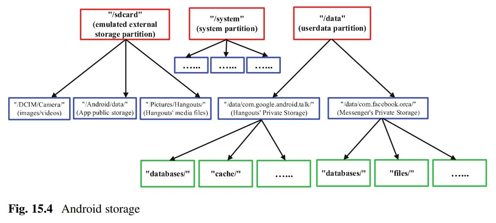

Mobile Forensics merupakan ilmu atau keahlian dalam proses dan mengelola barang bukti digital yang berasal dari mobile devices, handphone, tablets, dan berbagai istilah serta varian sejenis lainnya dengan metode yang dapat dipertanggung jawabkan. Pada prinsipnya mobile forensics memiliki kesamaan metode dengan digital forensics yang sudah ada, hanya saja kita mengubah point of view dari target bukti digital yang biasanya terdapat pada perangkat computer desktop kemudian dialihkan pada perangkat telepon bergerak atau mobile devices, perbedaan yang sangat besar adalah pada sisi teknis pelaksanaanya.
ANDROID FORENSICS
Smartphone android merupakan perangkat hybrid yang bisa bekerja sebagai ponsel dan juga bisa bekerja hampir seperti komputer tapi dalam bentuk portabel yang lebih simpel. Dengan meningkatnya penggunaan ponsel cerdas berbasis platform android dan IOS memberikan juga tantangan baru penggunaan ponsel cerdas ini dikaitkan dengan kegiatan kriminal. Perangkat ponsel cerdas ini bisa menyimpan data dalam jumlah besar, yang tidak terbatas hanya berupa log panggilan atau SMS, namun juga informasi lain dari aspek penggunaan, prilaku atau kegiatan lainnya.
Mobile Phone Fundamentals
Seperti yang terlihat pada gambar 15.2 di atas, terlihat bahwa smartphone saat ini memiliki struktur logika yang khas.
Karena smartphone tersebut telah menjadi kuat karena mampu miningkatkan daya pemrosesan CPU, memiliki berbagai
macam sensor dan touchscreen yang user friendly. Sehingga aplikasi yang tersedia untuk smartphone
lumayan melunjak dibandingkan dengan ponsel biasa. Adapun struktur yang dimaksud yaitu:

PROCESSOR
Processor dianggap sebagai otak komputer, karena processor bekerja untuk mengontrol keseluruhan jalan sebuah sistem perangkat. Contoh prosesor seluler adalah Apple's A8, Qualcomm's Snapdragon 810, dan Samsung's Jajaran Exynos
STORAGE MEMORY
memory penyimpanan smartphone biasanya terdiri dari beberapa partisi, yaitu memory sistem (internal), memory telepon (internal), dan kartu microSD (eksternal). Memory penyimpanan tersebut digunakan untuk menyiman OS android, aplikasi sistem, serta menyimoan data/chace dari aplikasi yang di install.
SENSORS
Dengan adanya sensor pada smartpone seperti sensor accelerometer, digital compass, gravity, gyroscope, GPS, fingerprint sensor, dan thermometer memungkinkan dapat digunakan untuk memantau suatu kondisi kemudian merespon terhadap perubahan sekitarnya. Contohnya mampu mengukur percepatan, dll.
SIM CARD
Setiap smartphone memerlukan SIM Card khususnya telepon GSM, karena SIM Card dibuat agar dapat berkomunikasi dengan operator selular yaitu menghubungkan telepon ke pelanggan maupun ke pengguna.

NETWORK CONNECTIVITY
Smartphone saat ini sudah dibekali dengan Wi-Fi sehingga jumlah aplikasi yang membutuhkan network connectivity melonjak, misal aplikasi social networking dan cloud computing.
CAMERAS & SPEAKERS
Dengan adanya sensor pada smartpone seperti sensor accelerometer, digital compass, gravity, gyroscope, GPS, fingerprint sensor, dan thermometer memungkinkan dapat digunakan untuk memantau suatu kondisi kemudian merespon terhadap perubahan sekitarnya. Contohnya mampu mengukur percepatan, dll.
Mobile Device Forensic Investigation
Dalam penyelidikan forensik pada mobile device, terdapat tiga aspek penting yang perlu diperhatikan, karena jika memilih aspek atau metode yang tidak tepat dapat merusak investigasi. Tiga aspek penting tersebut yaitu:
- Storage Location
Untuk mengekstrak dan menganalisis data yang disimpan pada smartphone, terlebih dahulu kita harus mengetahi dimana tempat kita menemukan data yang sesuai dan yang dibutuhkan untuk proses ekstraksi dan analisis. Perhatikan penggambaran hierarki penyimpanan Android pada gambar 15.4: - Acquisition Methods
Diketahui bahwa penyimpanan smartphone berpotensi berisi sejumlah besar informasi yang relevan dalam penyelidikan forensik. Untuk mengambil data dari smartphone, kita harus mendefinisikan jenis gambar pada penyimpanan smartphone yang nantinya akan dirujuk di beberapa bagian berikutnya, yaitu:
- Logical Image:
Logical image dianggap sebagai salinan file dan folder dari device storage. Manfaatnya yaitu mudah dikerjakan, karena semua file yang tercantum dapat segera dianalisis. Namun file yang telah dihapus tidak dapat dikembalikan. - Physical Image:
Physical image dianggap sebagai salinan bit-by-bit atau pembuangan data storage device atau partisi. Manfaatnya yaitu file lebih berpotensi untuk dipulihkan karena konten dari physical image ini lebih besar daripada logical image. - Data Analysis Setiap aplikasi khususnya di smartphone membutuhkan metode pendekatan analisis forensik yang unik dan bervariasi dengan aplikasi android, seperti pesan instan, panggilan telepon, browser web, dll.

Tingkat atas (merah) mewakili partisi (bagian dari semua partisi); yang kedua dan tingkat ketiga (biru dan hijau masing-masing) mewakili konten yang ditemukan di partisi ini. Partisi "userdata", dipasang di "/ data", berisi semua penyimpanan aplikasi pribadi. hal tersebut merupakan konten yang dilindungi dan hanya dapat diakses oleh setiap aplikasi.
CHIP-OFF
Istilah “chip-off” berarti chip flash NAND benar-benar dihapus dari papan sirkuit dan disalingkan langsung ke hardware tools melalui pin mereka. Metode ini rumit dan membutuhkan banyak pengetahuan teknis dan keberanian untuk membongkar mobile device.
JOINT TEST ACTION GROUP
JTAG adalah protokol komunikasi yang didukung oleh prosesor untuk menyediakan akses ke fungsi debug mereka. Dengan JTAG, kita akan terhubung langsung ke perangkat CPU dengan solder mengarah ke bantalan JTAG tertentu pada sirkuit. Koneksi ini (Data IN, Data OUT, Control, Clock; secara kolektif disebut Test Access Port) memungkinkan perangkat lunak JTAG untuk berinteraksi langsung dengan CPU dan memberikan perintah yang dapat memperoleh dump memori biner lengkap dari flash NAND.
FORENSIC SOFTWARE SUITES
Forensic software suites tersedia dan dirancang untuk perangkat smartphone yang dimanfaatkan sebagai penyedia konten, mengekstrak file dari perangkat, dan dapat menampilkan dan menyimpan file dengan aman. Namun, software ini sangat mahal sehingga support for new device mungkin akan lambat.
ANDROID DEBUG BRIDGE
ADB adalah alat baris perintah yang memungkinkan komunikasi antara komputer anda dan perangkat seluler (emulator). Untuk berinteraksi dengan metode ini “USB debugging” harus diaktifkan dan layar tidak boleh terkunci. Karena adanya beberapa keterbatasan, maka ADB tidak memungkinkan digunakan untuk memulihkan konten.
BACKUP APPLICATIONS
Backup applications menggunakan content provider untuk memperoleh jumlah data yang layak (jika perangkat tidak di-root). Mereka merangkum data, dan menyediakan mekanisme untuk mendefinisikan keamanan data.
FIRMWARE UPDATE PROTOCOLS
Firmware update protocols memberikan banyak mamnfaat. Metode ini memberikan pemulihan yang canggih pada smartphone tanpa mempengaruhi integritas data perangkat, karena mampu memulihkan physical image tanpa harus membongkar smartphone.
CUSTOM RECOVERY IMAGE
Custom recovery image difokuskan pada pemulihan partisi dan mode pemulihan android device. Salah satu manfaat dari metode ini yaitu dibandingkan dengan metode ekstraksi lainnya ketika gambar pemulihan khusus dibuat langkah yang diperlukan untuk mengekstrak informasi lebih sederhana. Namun, boot-loader perangkat dapat dikunci sehingga membuat proses ektraksi lebih sulit.
Analysis of Contact Information
Informasi kontak memungkinkan penyidik untuk menentukan dengan siapa pengguna berhubungan. Dengan menganalisis daftar kontak, timestamp kontak diblokir dari kontak tertentu, perilaku pengguna atau informasi kontaknya diungkapkan kepada para peneliti.
Analysis of Exchanged Messages
Kronologi pesan yang dipertukarkan bisa direkonstruksi dengan menentukan timestamp waktu dari pesan yang dipertukarkan, kumpulan pengguna yang terlibat dalam percakapan, dan apa dan kapan percakapan tersebut dilakukan.
Analysis of Deletions
Dalam beberapa aplikasi, catatan yang dihapus disimpan di perangkat untuk suatu periode. Misalnya, dalam database SQLite, penghapusan dapat dipulihkan dari apa yang disebut sel yang tidak terisi, yaitu ruang kosong yang disimpan dalam file yang sesuai dengan database.
GPS FORENSICS
Perangkat GPS (Global Positioning System) forensik menjadi bagian integral dari banyak penyelidikan. Dari sudut pandang penegak hukum telah melihat peningkatan penggunaan perangkat GPS sebagai instrumen kejahatan atau sebagai perangkat saksi karena fitur pada GPS mampu mengumpulkan dan mencatat data posisi selama kejahatan berlangsung.
The GPS System
GPS adalah sistem radio-navigation di seluruh dunia yang terbentuk dari konstelasi 27 satelit (24 beroperasi dan tiga tambahan jika satu gagal) dan ground stasiunnya yang mengelola satelit. Ada sejumlah aplikasi GPS dua dari aplikasi yang paling populer adalah GPS Tracking and GPS Navigation. Keduanya beroperasi dengan prinsip trilaterasi menggunakan satelit. Perangkat GPS berkomunikasi dengan satelit menggunakan sinyal radio frekuensi tinggi. Dengan mengukur waktu tempuh sinyal secara tepat, perangkat dapat dengan tepat menghitung seberapa jauh jaraknya dari satelit. Prinsip yang sama digunakan oleh RADAR untuk mendeteksi objek yang jauh.
Satelit secara konstan memancarkan sinyal ke perangkat GPS, dan informasi dalam sinyal berisi informasi seperti lokasi saat ini, dan tanggal dan waktu saat ini (atau waktu sinyal dikirim). Setelah menerima sinyal, perangkat GPS menghitung perbedaannya antara waktu sinyal dikirim dan waktu diterima. Lalu ia tahu berapa lama sinyal yang dibutuhkan untuk mencapai penerima dari satelit. Karena kita mengenal sinyal radio bergerak dengan kecepatan cahaya (186.000 mil/s), kita bisa mendapatkan jaraknya antara satelit dan perangkat GPS dengan mengalikan waktu tempuh sinyal dengan kecepatan cahaya.
Global Positioning System, atau singkatnya GPS, perangkat forensik dapat memberikan pengaruh yang sangat penting bukti dalam kasus pidana dan perdata. Beberapa perangkat GPS modern kami termasuk perangkat GPS pribadi serta perangkat mobil, penerbangan, dan kelautan. Juga, GPS aplikasi seperti Google Maps menjadi lazim di smartphone saat ini. Sebagai ditunjukkan pada Gambar 16.3 , perangkat GPS yang khas saat ini memiliki struktur logis berikut dan terdiri dari:
GPS RECEIVER
Struktur ini merupakan unit elektronik yang dapat menentukan posisi arus pengguna melalui analisis gelombang radio yang dikirim oleh satelit GPS.
BUILT-IN MAP
Memberikan tampilan peta kepada pengguna dengan memetakan posisi yang dihitung menurut sinyal yang disiarkan oleh satelit ke lokasi fisik di dunia. Selain itu, dapat menentukan kecepatan pengguna menurut gerakannya. Selanjutnya, ini dapat menurunkan perilaku mengemudi pengemudi.
NETWORK CONNECTIVITY
Saat ini perangkat GPS dilengkapi dengan berbagai kabel- lebih sedikit teknologi. Misalnya, Bluetooth menjadi sangat populer di zaman sekarang smartphone. Ini memungkinkan perangkat GPS untuk dipasangkan dengan telepon pengguna. Sebagai Hasilnya, perangkat GPS bisa terkoneksi ke Internet, menggunakan berbagai macam layanan cloud, misalnya, pembaruan peta otomatis. Namun, ini opsional untuk memilikinya
GPS Evidentiary Data
Perangkat GPS saat ini berisi banyak data yang menarik untuk penyidik forensik. Ada banyak jenis data yang berharga yang mungkin didapatkan dari perangkat GPS seperti :
- Track Logs
- Trackpoints
- Waypoints
- Routes
- Lokasi tersimpan, termasuk lokasi Rumah dan lokasi Favorit
- Tujuan terbaru: Alamat perjalanan yang dilakukan pengguna perangkat GPS.
- Riwayat perangkat yang dipasangkan: Riwayat semua perangkat (mis., ponsel) yang terhubung ke Perangkat GPS melalui Bluetooth.
- Video, Foto, Audio
- Riwayat panggilan, nomor telepon kontak, dan pesan SMS: Riwayat panggilan, kontak nomor telepon dan pesan SMS dari telepon yang terhubung.
SIM CARDS FORENSICS
Saat ini penyidik menjadikan ponsel menjadi salah satu poin penting yang harus dikhawatirkan, karena penggunaan ponsel setiap hari sehingga menjadi tempat yang menarik untuk menampung data. Oleh karena itu, ahli forensik digital harus menjaga setiap bukti yang mungkin diekstraksi dari ponsel terutama pada data yang dapat ditemukan dalam kartu SIM ponsel.
The Subscriber Identification Module (SIM)
SIM adalah singkatan dari "Subscriber Identity Module", yang merupakan kartu elektronik kecil yang menghemat identitas pelanggan yang merupakan pengguna ponsel yang berwenang untuk jaringan seluler GSM. Selain itu, SIM menyimpan kunci enkripsi yang digunakan dalam yang digunakan dalam otentikasi pengguna di jaringan seluler. UICC (Universal Integrated Circuit Card) adalah teknologi yang digunakan untuk jenis kartu pintar ini dimana kartu SIM GSM adalah contoh dari teknologi ini, seperti pada gambar 17.1.
Dengan begitu, penyedia layanan jaringan menggunakan kartu pintar untuk mengentaskan pengguna ke jaringannya yang merupakan kartu SIM. Dengan demikian, peran utama kartu SIM adalah untuk menyediakan dan membuktikan identitas. Selain itu, kartu SIM memiliki fungsi lain yaitu memberikan memori kecil bagi pengguna untuk menyimpan kontak dan menyimpan log panggilan dan SMS. Kartu-kartu ini datang dalam ukuran bervariasi seperti kartu SIM mini, mikro, dan nano seperti yang ditunjukkan pada Gambar 17.2.
Semua kartu SIM terdiri dari dua bagian penyimpanan data. Satu bagian digunakan untuk informasi sistem dan bagian lainnya digunakan untuk informasi pengguna yang dikunci oleh kode PIN pengguna. Dari bagian pengguna, kontak, log panggilan, dan SMS dapat dipulihkan bahkan jika entitas dihapus. Tiga informasi penting disimpan di bagian sistem yaitu nomor ICCID, IMSI, dan MSISDN dan data area lokasi. ICCID (Integrated Circuit Card Identifier) adalah nomor seri dari kartu SIM. Sedangkan IMSI (International Mobile Subscriber Identity) adalah kode unik yang secara internasional dipakai dalam mengidentifikasi pengguna di dalam jaringan GSM. Terakhir, MSISDN (Mobile Subscriber Integrated Services Digital Network Number) atau lebih dikenal dengan nomor HP digunakan bersamaan dengan IMSI dan ICCID (pada elemen tertentu) untuk melakukan identifikasi dan autentifikasi apakah pengguna tersebut diperbolehkan menggunakan jaringan suatu provider tertentu."
SIM Architecture
Kartu SIM sebagai sistem pintar terdiri dari prosesor, memori, dan sistem operasi. Mikroprosesor dan OS dapat berupa kartu Java yang menggunakan platform bahasa pemrograman Java untuk perangkat tertanam atau eksklusif untuk penerbitnya. Chip SIM yang sebenarnya ditutupi oleh bingkai plastik. Namun, hanya permukaan koneksi yang terpapar ke dunia luar yang menyimpan komunikasi antara perangkat dan kartu SIM melalui antarmuka serial seperti pada gambar 17.4.
Selain itu, slot SIM perangkat biasanya tidak dapat dijangkau untuk menjaga kartu SIM dari akses eksternal. Slot biasanya terletak di bawah baterai perangkat atau di satu sisi perangkat yang dapat diakses menggunakan lubang pin seperti yang ditunjukkan pada Gambar 17.5.
Security
Berdasarkan aplikasi, operasi akses atas file dikontrol oleh izin yang terkait dengan file. Seperti yang disebutkan sebelumnya, semua file MF, DF, dan EF adalah terkait dengan izin keamanan dengan berbagai tingkatan. Identifikasi personal Nomor (PIN) digunakan untuk melindungi data pelanggan dimana kode ini (4–8 digit) digunakan untuk verifikasi. Namun, kode PIN digunakan atas data pelanggan dan data sistem. Personal Unlocking Key (PUK) juga dikenal sebagai PIN Unblocking.
Kegagalan memberikan kode PUK yang benar dalam jumlah terbatas upaya akan memblokir Kartu SIM tanpa henti. Apalagi membuka kode PIN melalui perangkat sangat berbahaya karena kegagalan akan menyebabkan pemblokiran perangkat. Maka disarankan untuk mengeluarkan kartu SIM di awal proses forensik. Sayangnya, tanpa membuka kunci PIN kode, penyidik tidak dapat mengekstrak data pengguna dari sistem SIM. Selanjutnya, kode PUK dapat diperoleh oleh penyedia layanan jaringan menggunakan nomor ICCID yang dapat ditemukan di fiks atau kadang-kadang mungkin ditemukan di SIM itu sendiri seperti yang ditunjukkan pada Gambar 17.7. Oleh karena itu, dalam beberapa kasus, penyelidik tidak dapat memulihkan kode PUK sehingga kode PIN data pengguna di dalam kartu SIM tidak akan diekstraksi lagi dan hanya data sistem yang dapat membantu investigasi.
Evidence Extraction
Untuk kartu SIM, kontak, log panggilan, dan pesan SMS disimpan dalam sistem file EF. Untuk menemukan bukti-bukti tersebut, data yang diekstrak harus diterjemahkan untuk membantu penyidik membaca bukti-bukti yang diekstraksi. Mengapa penting untuk melihat bukti di dalam memori SIM sementara kontak, log panggilan, dan SMS dapat diambil dari perangkat itu sendiri? Jawabannya sederhana. Misalnya, kontak yang disimpan di perangkat mungkin berbeda dari kontak yang disimpan di SIM secara langsung. Selain itu, beberapa SMS yang dihapus dapat dipulihkan dari memori kartu SIM. Lebih lanjut, dalam beberapa kasus, kartu SIM adalah satu-satunya benda yang dimiliki penyidik karena perangkatnya hilang atau rusak..
CONTACTS
Kartu SIM berisi beberapa kontak tertentu yang berbeda dari kontak yang ditemukan di perangkat, karena kartu SIM memungkinkan pengguna untuk menyimpan kontak langsung di atasnya. Selain itu, perangkat telepon memungkinkan pengguna untuk memilih antara perangkat, kartu SIM, dan cloud untuk menyimpan kontak mereka. Versi lama dari kartu SIM 32 K dapat menyimpan hingga 250 kontak, sementara di versi yang lebih baru meningkat hingga 500 kontak dalam kartu SIM 64 K dan 600 kontak atau lebih dalam kartu SIM 128 K. Data kontak yang disimpan dalam EF kartu SIM dikenal sebagai Nomor Panggil Singkat (ADN). Namun, ADN disimpan oleh pengguna perangkat dan tidak dapat diakses oleh penyedia layanan jaringan. Oleh karena itu, sangat membantu bagi penyidik untuk koneksi tersangka tersedia sebagai contoh

CALLS
Di perangkat ponsel, log panggilan keluar, masuk, dan tidak terjawab disimpan saat hanya panggilan keluar yang disimpan dalam kartu SIM. Konfigurasi perangkat menentukan apakah log panggilan keluar akan disimpan ke penyimpanan kartu SIM atau tidak. Namun, keluar log panggilan pada kartu SIM bisa berbeda dan tidak sama dengan log perangkat. Oleh karena itu, log panggilan harus diekstraksi dari kartu SIM oleh penyelidikan forensik yang dapat memastikan bukti yang berguna. Daftar panggilan keluar dikenal sebagai Panggilan Terakhir Nomor (LDN) atau Nomor Terakhir yang Dihubungi (LND).

SMS
Short Message Service (SMS) merupakan salah satu bukti penting yang dapat diekstraksi dari kartu SIM. Pengguna dapat mengirim dan menerima pesan teks yang berisi up hingga 160 karakter bahasa Inggris atau 70 abjad bahasa lainnya. Badan SMS dikodekan menggunakan pengkodean 7-bit khusus yang disebut penyandian GSM 03.38 atau Unicode untuk non-Inggris karakter. Memang, pesan besar yang melebihi batas atas dibagi menjadi beberapa SMS. Perangkat pengirim membongkar pesan besar sementara penerima dipasang kembali setelah menerima semua bagian dari pesan. Perhatikan bahwa ada banyak ketiga aplikasi pesan instan pesta seperti Google Hangouts yang dibahas sebelumnya bab, dan pesan yang dikirim oleh aplikasi ini tidak disimpan dalam penyimpanan SIM.